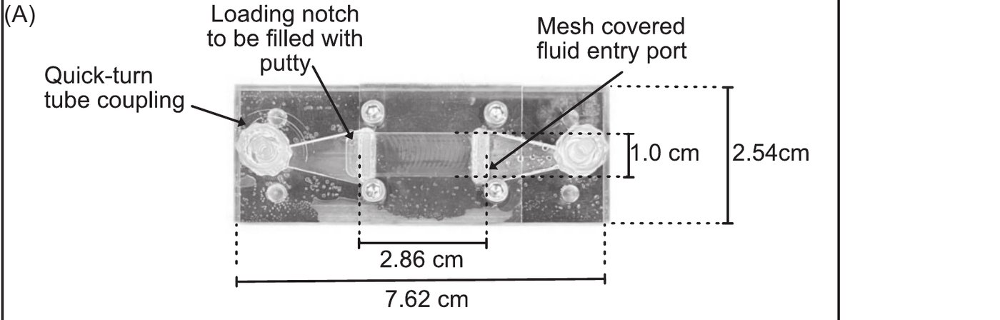
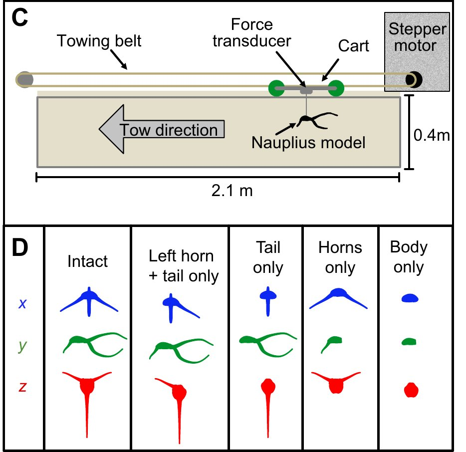

Research entry 03
Tool development: Instruments for small animals
Many questions about small marine animals go unanswered because nobody can watch or measure them in the right conditions. I build instruments to close that gap, from a palm-sized chamber of transparent sand to a 1.5 m tank of syrup.

Rendered from the CAD model
- 01The Meioflumewatching animals inside sandp. 003-B
- 02The tow tankmeasuring forces on larvaep. 003-C
The Meioflume
p. 003-BQ: How do you watch an animal that lives inside sand?
Meiofauna live inside sand, where water seeps through the spaces between grains. Sand is opaque, so their behavior there has rarely been watched directly. The Meioflume is a small flow chamber, packed with sand that turns transparent underwater, that sits on a microscope stage. It gives a see-through patch of seafloor with controlled porewater flow.
The chamber is three pieces of clear acrylic, milled on a CNC router and bolted together, 7.6 cm long and 2.5 cm wide. Water enters at one end, spreads out through a flow-widening chamber, and crosses a working area 28.6 mm long, 10.2 mm wide, and 1 mm deep. Mesh screens (100 µm) at each end keep animals and grains from washing out.
The working area is filled with cryolite, a mineral whose refractive index is close to that of seawater, so it nearly disappears when wet. An Arduino-controlled syringe press pushes seawater through at flow rates from 0.0001 to 1 mL/s, covering the porewater speeds found in natural sands. Packed cryolite has a porosity of about 39%, within the range of natural marine sands (38 to 46%).
Cryolite is no longer mined and is hard to find, so other transparent substrates (Nafion, hydrogels, 3D-printed resin, or PDMS casts) could take its place.

Ballentine & Dorgan 2024, Integrative Organismal Biology
Drag to rotate, scroll or pinch to zoom.

Ballentine & Dorgan 2024, Integrative Organismal Biology
What it shows
Animals placed in the Meioflume can be filmed moving through the cryolite before and after flow starts. In early trials, a copepod began burrowing almost as soon as water started moving, a protodrilid worm turned and headed downward, and a flatworm paused briefly, then carried on.
in progress: how gastrotrichs ("hairy bellies") respond to flow

Ballentine & Dorgan 2024, Integrative Organismal Biology
Build your own
The CAD model and parts list are free on GitHub. Parts: 1/4" clear acrylic (body), 1/16" clear acrylic (lid), two quick-turn tube couplings, two three-way stopcock valves, four 6-32 stainless socket head screws, and high-vacuum grease.
The tow tank
p. 003-CQ: How do you measure forces on an animal smaller than a grain of rice?
The forces on a swimming larva a fraction of a millimeter long are far too small to measure directly. Instead, we build a larger copy and move it slowly through a fluid thick enough that the flow around it matches the flow around the real animal (dynamic similarity, matching the Reynolds number).
At the University of Washington I built a tow tank for these experiments. It pulls a model through diluted corn syrup at a controlled speed while a sensor records every force and twist on it.
School of Oceanography, University of Washington
The tank is clear acrylic, about 1.5 m long, 0.5 m wide, and 0.5 m deep, on an aluminum stand 1.2 m tall. Above it, a wheeled cart runs along a 1020 V-slot aluminum rail, pulled by a belt driven by a NEMA 23 stepper motor and a BlackBox X32 driver.
The cart carries an ATI Nano17, a six-axis force/torque sensor about the size of a coin. A rod connects it to the model below, so it records drag, lift, and side force along with the pitch, roll, and yaw torques. An ATI interface power supply box powers the sensor and conditions its signals, and a National Instruments data acquisition board records them.

Ballentine et al. 2026, Journal of Experimental Biology
Towing rail, motor, belt, and cart are simplified and placed from photos; the force sensor is not shown. Drag to rotate, scroll or pinch to zoom.
What it's used for
The tow tank collected all of the force and torque data for our study of horns and tail spines on barnacle nauplii (see Zooplankton), and has supported three undergraduate research projects.
Read more
the papers behind this page- 2026Ballentine W.M., Chan K.Y.K., Wong E., Wong J.Y., Koehl M.A.R. Hydrodynamic effects of spines on zooplankton: how horns and tails alter flow and forces on barnacle nauplii. Journal of Experimental Biology 229: jeb252318. doi:10.1242/jeb.252318
- 2024Ballentine W.M., Dorgan K.M. The Meioflume: a new system for observing the interstitial behavior of meiofauna. Integrative Organismal Biology 6(1): obae016. doi:10.1093/iob/obae016